| ・ 宵々山 (R01.7.13) | |||
去年のように、M2のN谷さん、M1のS山さん，I田さん，M4さん、助教の人と土曜日にうろうろしました。 今年は小雨で過ごしやすい日でした。 |
|||
|
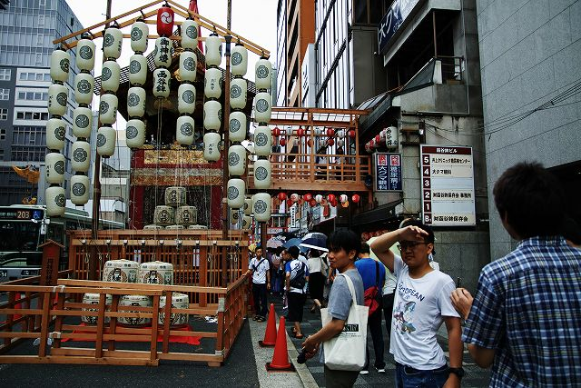
函谷鉾 |
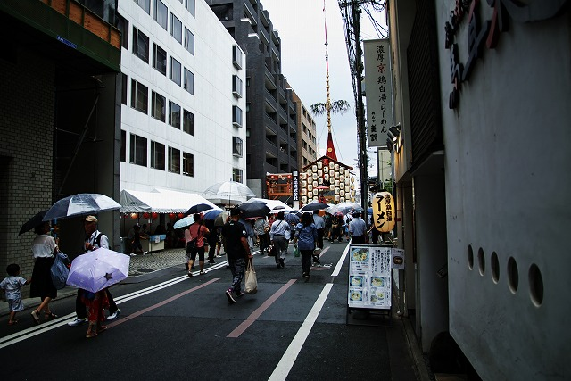
菊水鉾 | ||
|
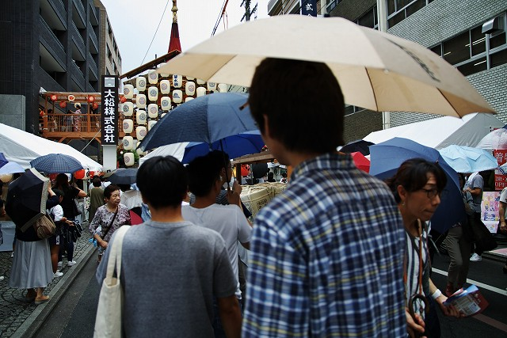
去年より少ない！ |
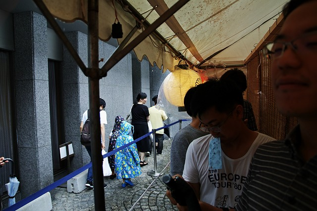
乗ってみよう | ||
|
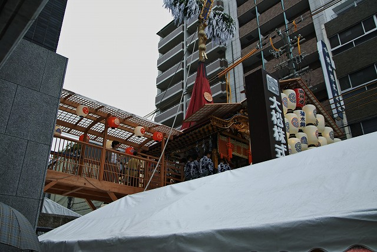
ボーディングブリッジ |
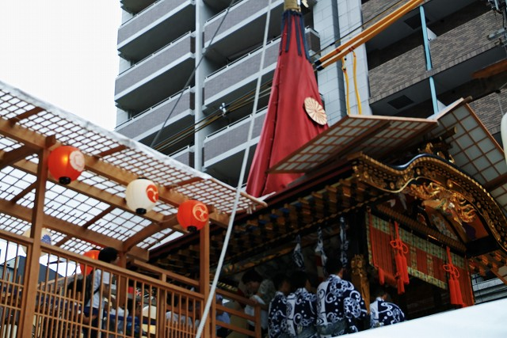
マンションと鉾 | ||
|
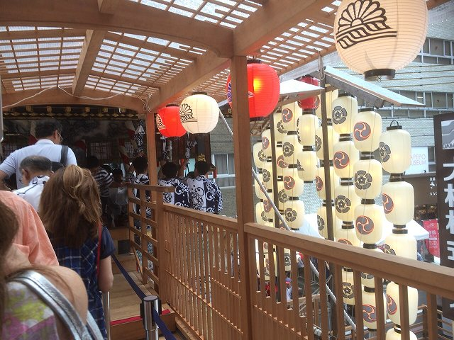
近代と古代をつなぐ感じ |
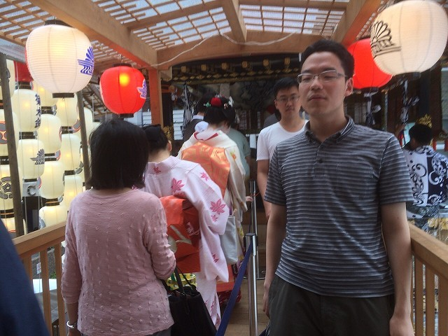
中は撮影禁止 | ||
|
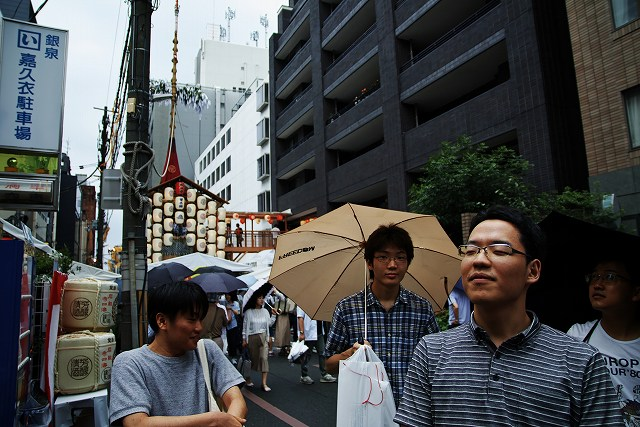
良かった |
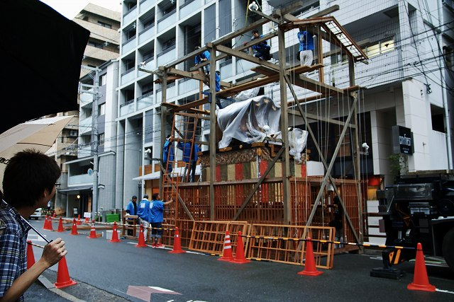
カマキリ見に来た | ||
|
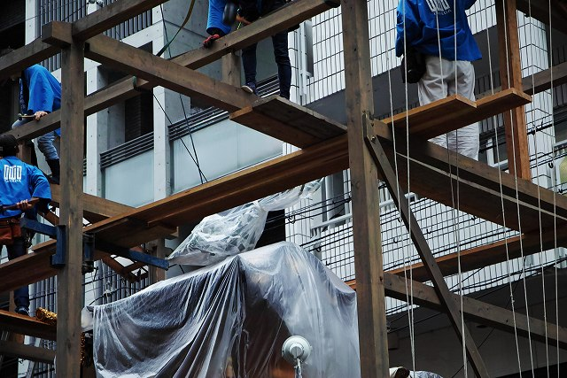
見えない |
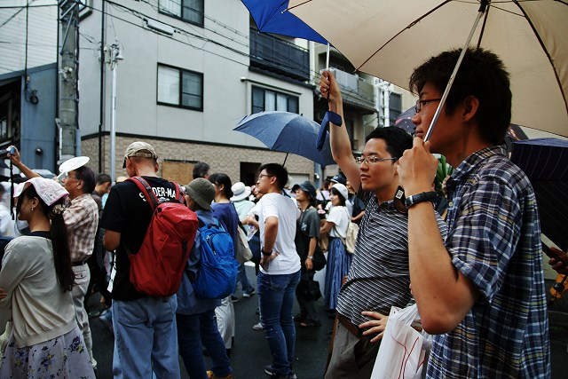
カバーが | ||
|
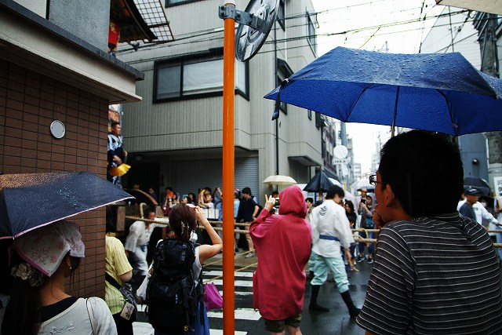
山車を曳いている！ |
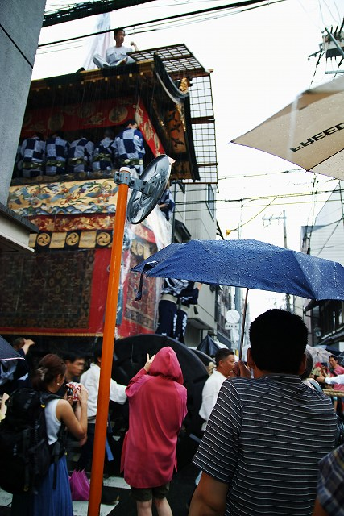
すごい音 | ||
|
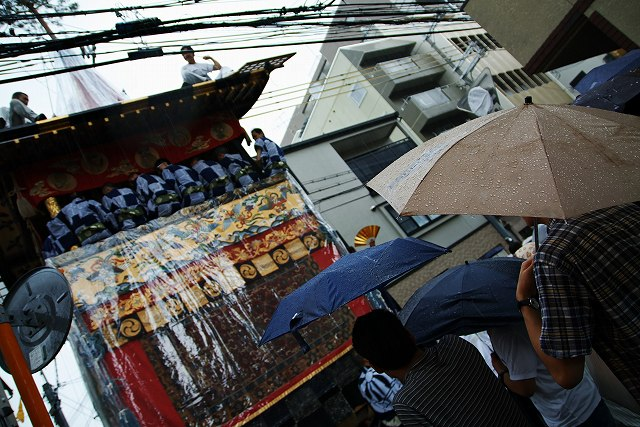
圧倒的な重量感 |
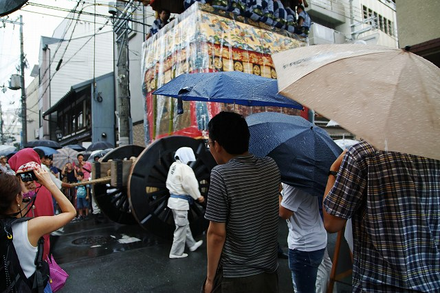
肩がすくみます | ||
|
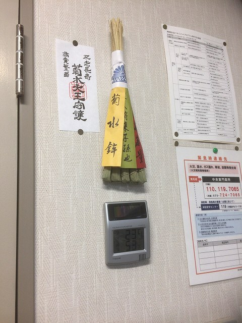
ちまき |
|||